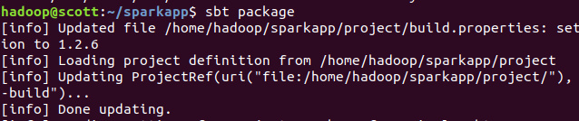

Spark编程
Scala实现
sbt
首先安装sbt
unzip sbt-1.2.6.zip -d /usr/local/
赋予权限
sudo chown –R hadoop /usr/local/
添加进环境变量PATH中vim ~/.bashrc。
执行sbt version看是否安装成功，此时会下载一些依赖，确保联网。
编程
在/home/hadoop目录下创建sparkapp文件夹，作为程序根目录
mkdir ./sparkapp
mkdir –p ./sparkapp/src/main/scala
接着在sparkapp/src/main/scala下创建SimpleApp.scala：
/* SimpleApp.scala */
import org.apache.spark.SparkContext
import org.apache.spark.SparkContext._
import org.apache.spark.SparkConf
object SimpleApp {
def main (args: Array[String])
val logFile = "file:///usr/local/spark/README.md"
val conf = new SparkConf().setAppName("Simple Application")
val sc = new SparkContext(conf)
val logData = sc.textFile(logFile, 2).cache()
val numAs = logData.filter(line => line.contains("a")).count()
val numBs = logData.filter(line => line.contains("b")).count()
println("Lines with a: %s, Lines with b: %s".format(numAs, numBs))
}
使用sbt打包scala程序，在sparkapp目录下新建simple.sbt：
name := "Simple Project"
version := "1.0"
scalaVersion := "2.11.8"
libraryDependencies += "org.apache.spark" %% "spark-core" % "2.3.2"
打包成JAR包：
sbt package

运行
将生成的jar包通过spark-submit提交到Spark中运行：
/usr/local/spark/bin/spark-submit --class "SimpleApp" ~/sparkapp/target/scala-2.11/simple-project_2.11-1.0.jar 2>&1 | grep "Lines with a:"
Java实现
maven
安装maven，解压安装到/usr/local/maven目录下，并给予hadoop用户该目录的权限：
sudo unzip apache-maven-3.3.9-bin.zip -d /usr/local
mv apache-maven-3.3.9 maven
将usr/local/maven/bin加入PATH：./bashrc并source。
mkdir -p ./sparkapp2/src/main/java
编程
在/home/hadoop目录下创建sparkapp2文件夹，作为应用程序的根目录，并创建子目录mkdir –p ./sparkapp2/src/main/java
vim ./sparkapp2/src/main/java/SimpleApp.java
在该子目录下新建SimpleApp.java文件
/*** SimpleApp.java ***/
import org.apache.spark.api.java.*;
import org.apache.spark.api.java.function.Function;
public class SimpleApp {
public static void main(String[] args) {
String logFile = "file:///usr/local/spark/README.md"; // Should be some file on your system
JavaSparkContext sc = new JavaSparkContext("local", "Simple App",
"file:///usr/local/spark/", new String[]{"target/simple-project-1.0.jar"});
JavaRDD<String> logData = sc.textFile(logFile).cache();
long numAs = logData.filter(new Function<String, Boolean>() {
public Boolean call(String s) { return s.contains("a"); }
}).count();
long numBs = logData.filter(new Function<String, Boolean>() {
public Boolean call(String s) { return s.contains("b"); }
}).count();
System.out.println("Lines with a: " + numAs + ", lines with b: " + numBs);
}
}
在sparkapp2目录下新建pom.xml：
<project>
<groupId>edu.berkeley</groupId>
<artifactId>simple-project</artifactId>
<modelVersion>4.0.0</modelVersion>
<name>Simple Project</name>
<packaging>jar</packaging>
<version>1.0</version>
<repositories>
<repository>
<id>alimaven</id>
<url>http://maven.aliyun.com/nexus/content/groups/public/</url>
</repository>
</repositories>
<dependencies>
<!-- https://mvnrepository.com/artifact/org.apache.spark/spark-core -->
<dependency>
<groupId>org.apache.spark</groupId>
<artifactId>spark-core_2.11</artifactId>
<version>2.3.2</version>
</dependency>
</dependencies>
</project>
查看项目结构：
在sparkapp2目录下build：

成功build：
运行程序
spark-submit --class "SimpleApp" ~/sparkapp2/target/simple-project-1.0.jar 2>&1 | grep "Lines with a"
运行成功
集群上运行
在集群上运行，只需要修改IP地址即可，
对于java程序，修改为：
/*** SimpleApp.java ***/
import org.apache.spark.api.java.*;
import org.apache.spark.api.java.function.Function;
public class SimpleApp {
public static void main(String[] args) {
String logFile = "hdfs://hadoop1:9000/README.md"; // Should be some file on your system
JavaSparkContext sc = new JavaSparkContext("spark://hadoop1:7077", "Simple App",
"file:///usr/local/spark/", new String[]{"simple-project-1.0.jar"});
JavaRDD<String> logData = sc.textFile(logFile).cache();
long numAs = logData.filter(new Function<String, Boolean>() {
public Boolean call(String s) { return s.contains("a"); }
}).count();
long numBs = logData.filter(new Function<String, Boolean>() {
public Boolean call(String s) { return s.contains("b"); }
}).count();
System.out.println("Lines with a: " + numAs + ", lines with b: " + numBs);
}
}
对于Scala程序，修改为：
/* SimpleApp.scala */
import org.apache.spark.SparkContext
import org.apache.spark.SparkContext._
import org.apache.spark.SparkConf
object SimpleApp {
def main (args: Array[String]){
val logFile = "hdfs://10.11.6.91:9000/README.md"
val conf = new SparkConf().setAppName("Simple Application")
val sc = new SparkContext(conf)
val logData = sc.textFile(logFile, 2).cache()
val numAs = logData.filter(line => line.contains("a")).count()
val numBs = logData.filter(line => line.contains("b")).count()
println("Lines with a: %s, Lines with b: %s".format(numAs, numBs))
}
}
运行程序
Java
spark-submit --class "SimpleApp" simple-project-1.0.jar 2>&1 | grep "Lines with a"
Scala
spark-submit --class "SimpleApp" simple-project_2.11-1.0.jar 2>&1 | grep "Lines with a"